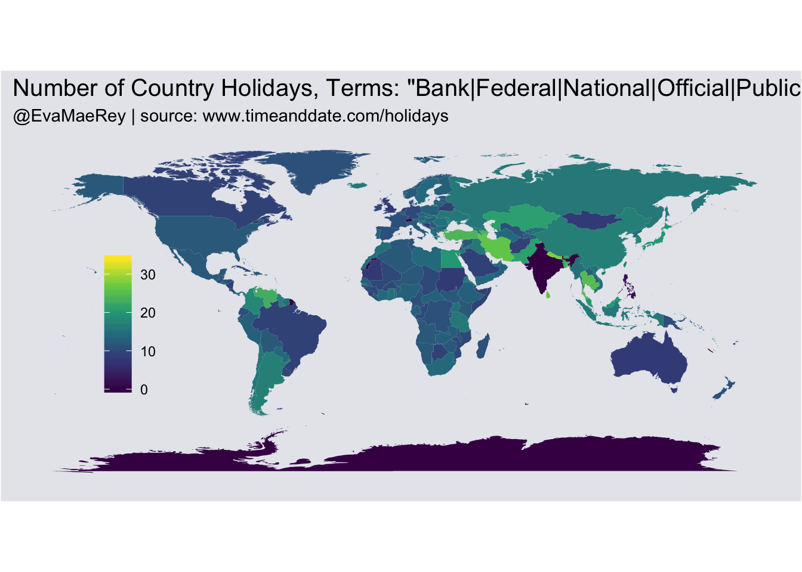
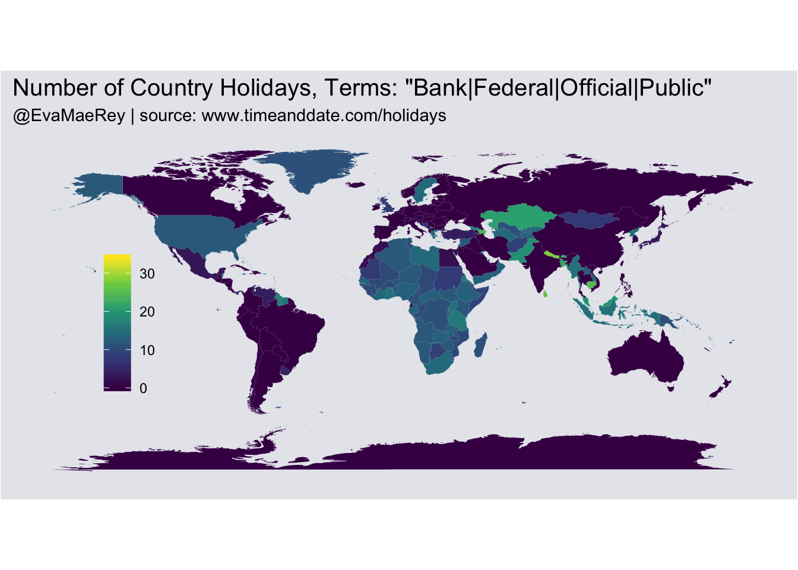
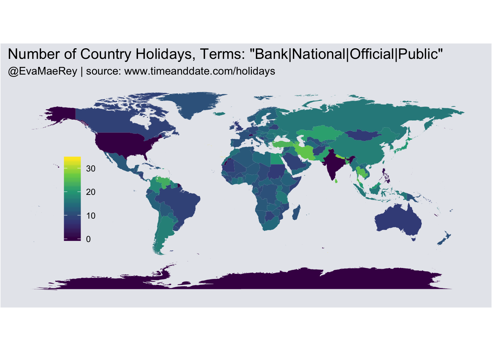
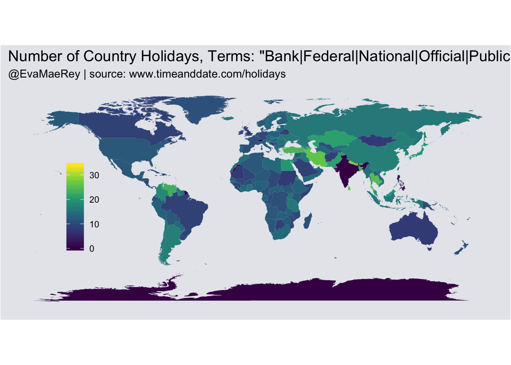
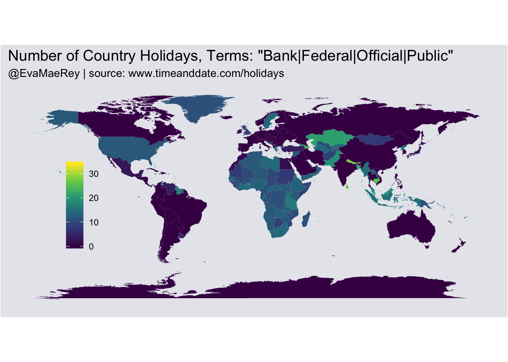
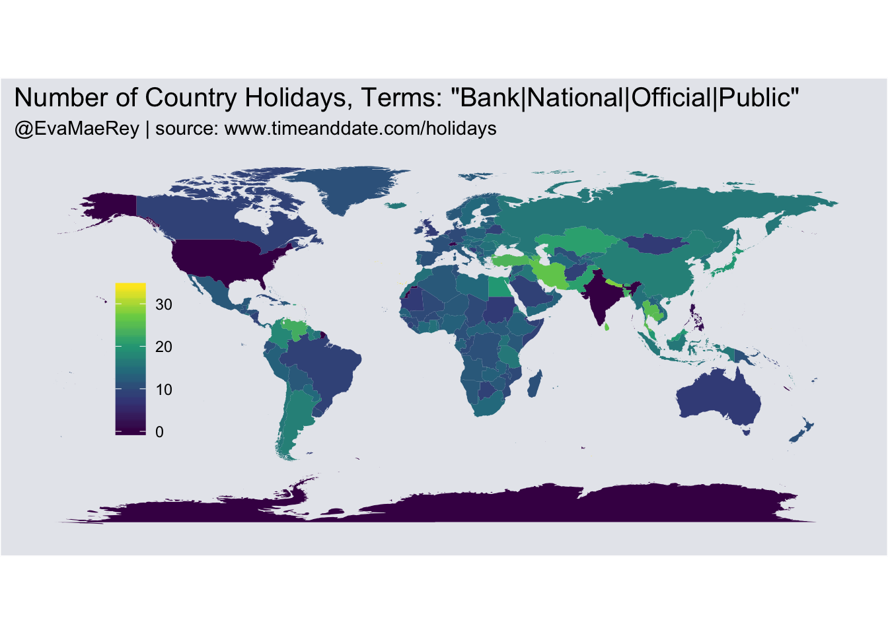
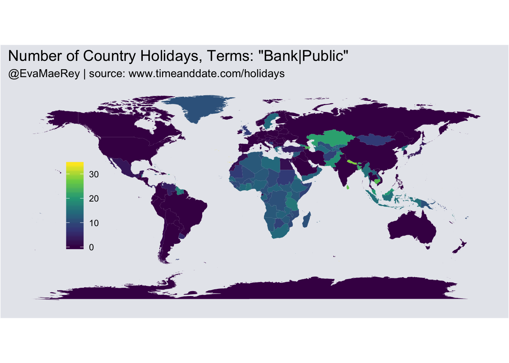
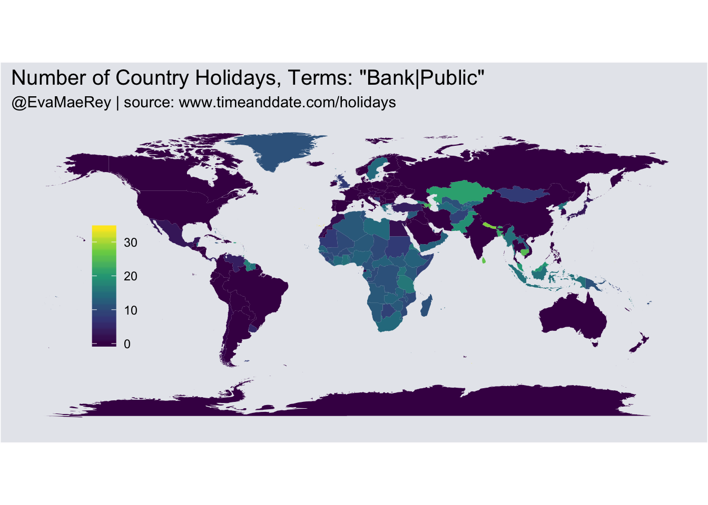

Chapter 17 Public Holidays
The public holidays visualization task posed a challenge at the outset. There were many types of holidays in the dataset, and it was unclear which were considered public holidays in the original visualization.
The idea of what Andrew Gelman terms “Garden Paths” came to mind – i.e. how researcher choices may result in quite different analysis outcomes. I produce several world maps based on different plausible researcher choices.
A random sample from the data set:
| Region | Country | Date | Weekday | Holiday Name | Holiday Type | Where It is Observed | CountryName |
|---|---|---|---|---|---|---|---|
| South America | Guyana | 2017-12-25 | Monday | Christmas Day | Public Holiday | NA | Guyana |
| Asia & Middle East | Kuwait | 2017-09-22 | Friday | Islamic New Year | Official holiday | NA | Kuwait |
| Europe | Macedonia | 2017-09-08 | Friday | Independence Day | National holiday | NA | Macedonia |
| North America | US Virgin Islands | 2017-07-04 | Tuesday | American Independence Day | Observance | NA | U.S. Virgin Islands |
| Europe | Liechtenstein | 2017-03-19 | Sunday | St Joseph’s Day | National holiday | NA | Liechtenstein |
# Mapping data
world_map_df = map_data("world") %>%
mutate(CountryName=countrycode::countrycode(region, "country.name", "country.name"))
CountriesWorldMap = world_map_df %>% group_by(CountryName, region) %>% summarise()# create a blank ggplot theme
theme_opts <- list(theme(panel.grid.minor = element_blank(),
panel.grid.major = element_blank(),
panel.background = element_blank(),
plot.background = element_rect(fill="#e6e8ed"),
panel.border = element_blank(),
axis.line = element_blank(),
axis.text = element_blank(),
axis.ticks = element_blank(),
axis.title = element_blank(),
plot.title = element_text(size=15)))
hitsList=c("Bank", "Public", "National", "Federal", "Official")
pickList=c()
for(i in 1:200){
pickList[i] =
paste(sort(
unique(c("Bank","Public",
sample(hitsList,replace = T)))),
collapse = "|")
}
pickList=unique(c(pickList))[1:8]
for (i in pickList){
NumBankHolidays = data0 %>%
filter(stringr::str_detect(`Holiday Type`, i )) %>%
group_by(CountryName) %>%
summarise(count=n())
#Some values were not matched unambiguously: Micronesia, Saint Martin, St. Barts
table(NumBankHolidays$`Holiday Type`)
NumBankHolidays %>% group_by(CountryName) %>% summarise()
data=world_map_df %>% left_join(NumBankHolidays) %>% mutate(count=ifelse(is.na(count), 0, count))
# plot maps
print(ggplot(data, aes(long, lat, group = group, fill = count)) +
geom_polygon() +
labs(title = "World map (longlat)") +
coord_equal() +
labs(fill = "", x = "", y = "") +
labs(title = paste0("Number of Country Holidays, Terms: \"", i, "\"")) +
labs(subtitle = "@EvaMaeRey | source: www.timeanddate.com/holidays") +
theme(legend.position = c(.15, .5),
legend.background = element_blank()) +
theme_opts +
scale_fill_viridis_c(option = "viridis", direction = 1)
)
} 


 
